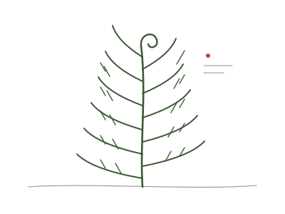

A house sparrow learns the feeder
Three mornings of patience, one sunflower seed and a lesson in watching without hurrying.
Observed Mar 14Back gardenClear, 6°C
A field journal for the birds at the feeder, the fern in the shade and the weather rolling in. Small notes, gathered patiently, become a record of a place.

FROM THE NOTEBOOK
Three mornings of patience, one sunflower seed and a lesson in watching without hurrying.
Tight green coils, a week ahead of last year. Notes on timing, light and a patient kind of growth.
Two days of rain and the woodland floor rearranged itself. What to record, and what to leave alone.
Rising wind, a halo around the sun and a sudden quiet among the birds: a short guide to field signs.
A slow loop over the ridge, with notes on the path, the plants along it and when to turn back.
Paper, weight and patience. The simplest way to keep a season of leaves without damaging the tree.